/ who? or what?
The inhabitants of Hallownest can be broadly organized into three primary roles—merchants, story-driven NPCs, and the legendary Nailmasters—though the lines between these categories often blur. While story NPCs like Hornet or Quirrel exist to deepen the lore and guide the player's journey, the merchants provide the essential charms and equipment needed for survival. Because the Nailmasters function as specialized vendors who "sell" powerful combat techniques in exchange for Geo, they are frequently grouped into the merchant category, effectively streamlining the game's diverse cast into two functional groups: those who provide narrative depth and those who provide the mechanical upgrades necessary to conquer the kingdom’s many threats.
/ merchants (inlcuding nailmasters)
The trade and progression of Hallownest are sustained by a colorful cast of vendors and masters, ranging from the frantic shopkeeper Sly in Dirtmouth to specialized service providers like the map-vending Iselda and the charm-obsessed Salubra. While primary merchants like the fragile Leg Eater, the curious Relic Seeker Lemm, and the opulent Divine trade in physical goods and upgrades, others offer vital supernatural utilities, such as Confessor Jiji's shade retrieval or Tuk's supply of Rancid Eggs. Even the kingdom's ancient traditions fit this mercantile mold, with The Last Stag providing essential transport and the legendary Nailmasters—Mato, Oro, and Sheo—exchanging their combat wisdom for Geo. Whether they are selling a simple waypoint or a life-saving Nail Art, these NPCs bridge the gap between the game’s deep lore and the mechanical growth required to survive.
/ story npcs
In the melancholic world of Hollow Knight, these characters represent the diverse threads of Hallownest’s fading history, ranging from tragic figures to comic relief. At the heart of the narrative are The Dreamers and the lethal sentinel Hornet, who serve as the kingdom's ultimate guardians, while wandering scholars like the fan-favorite Quirrel and the mystic Seer provide the lore and tools necessary to uncover its secrets. The list features notable warriors on contrasting paths, such as the courageous, club-wielding Cloth and the hilariously self-important Zote the Mighty, alongside the arrogant Tiso, whose hubris leads to a grim end in the Colosseum. Completing this ranked assembly are the more poignant figures: the Grubfather, whose "reward" for rescuing his children remains one of the game's most unsettling reveals, and the Grey Mourner, who tasks players with the notoriously difficult Delicate Flower quest to find peace for her lost lover.
- hornet ofc
- the dreamers
- cornifer and iselda
- ... and all the other npcs!!
/ bosses?
With a staggering roster of 47 bosses to encounter, the challenges of Hallownest range from simple territorial beasts to the literal gods of the dream world. At the peak of the difficulty curve stand legendary threats like Absolute Radiance, Nightmare King Grimm, and the Pure Vessel, all of whom demand near-perfect reflexes and mastery of the game’s combat rhythm. Beneath these titans are iconic mid-game tests of skill, such as the relentless Watcher Knights and the beautifully choreographed Sisters of Battle, which contrast sharply with more straightforward "starter" bosses like the False Knight or the Massive Moss Charger. Whether it’s the tragic, self-destructive fight against The Hollow Knight or the erratic, frustrating comedy of Grey Prince Zote, each encounter serves as a mechanical and narrative milestone that defines the player's journey through the ruined kingdom.
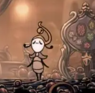
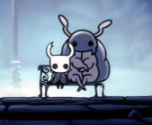
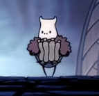
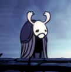
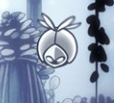
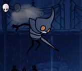
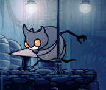
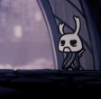
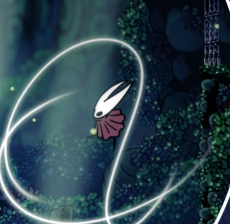
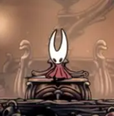
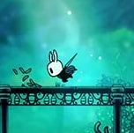
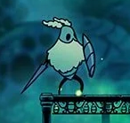
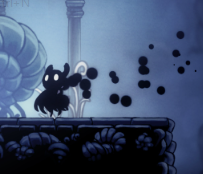
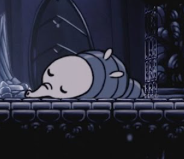
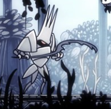
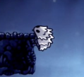
(ignore how some images are repeated)